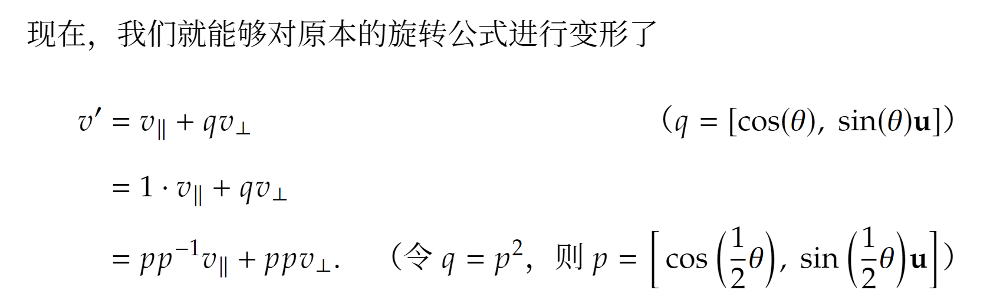

旋转的常见表示方法：
欧拉角（cons: 万向节死锁，静态欧拉角不存在万向锁问题，只有动态欧拉角会引起万向锁）
万向节死锁的思考：为了方便调整旋转方向，我们得控制变量，每次只旋转一个轴，所以得采用Gimbal的形式，这种不断基于上次旋转修改的操作我们得使用动态欧拉角，但这种默认旋转调整顺序就导致动态欧拉角会出现欧拉角的层级，层级化的欧拉角由此导致Gimbal lock。
旋转矩阵（绕x\y\z轴旋转之后再累乘，每一次旋转都是一次特定的轴角表示下的旋转，三维旋转矩阵不可交换顺序）| 轴角表示（绕特定轴旋转某个角度）- 罗德里格斯旋转公式
四元数（较难直观认知）
四元数
四元数定义：一个实部三个虚部, 定义中的关键性质：虚部的运算性质
四元数乘法：
四元数之间的乘法不遵守交换律，虚部乘法的运算法则是由上述性质推导出来的
有虚部的运算法则，我们可以得到乘法的完整表述，并可以把乘法用矩阵描述
除了矩阵之外，我们也可以把乘法操作用向量的点积和差积表述

四元数的逆和共轭
- 标准四元数的逆是唯一的，本质上是两个共轭的四元数把虚部消除掉，只剩下实部。而共轭四元数的乘法是特殊的，满足交换律。
- q* 表示四元数的共轭，就是虚部取反的四元数
- q乘q的逆=q的逆乘q=1
四元数的旋转的初步结论
思路是沿着v向量某个轴u旋转的话，把a拆成平行轴的部分和垂直轴的部分
四元数的旋转的进一步化简（1）

四元数的旋转的进一步化简（2）
把上述公式中的四元数q展开成矩阵形式之后，发现可以把矩阵压缩至3*3维度
通过旋转四元数q倒退旋转轴和旋转角
四元数旋转的复合（连续旋转）
四元数简易插值公式 (Slerp的一种描述方式)
四元数插值进阶
四元数每旋转alpha角度，在实际的3维上会旋转2*alpha角度
Lerp 线性插值
直接利用四元数的加法规则进行插值
Nlerp 对线性插值的正则化
Slerp 对四元数内的角度进行插值
如果要插值的角度比较小的话，Nlerp 其实相对于Slerp 的误差并没有那么大．为了提高效率，我们经常会使用Nlerp 来代替Slerp．我们也能用一些数值分析的方法来近似并优化四元数的Slerp．你可以在一些图形引擎的源代码中找到一些例子．
除了效率问题之外，我们在实现Slerp 时要注意，如果单位四元数之间的夹角θ非常小，那么sin(θ) 可能会由于浮点数的误差被近似为0.0，从而导致除以0 的错误．所以，我们在实施Slerp 之前，需要检查两个四元数的夹角是否过小（或者完全相同）．一旦发现这种问题，我们就必须改用Nlerp 对两个四元数进行插值，这时候Nlerp 的误差非常小所以基本不会与真正的Slerp 有什么区别。
插值需要注意的细节（选择最短的插值路径）
这也就告诉我们，在对两个单位四元数进行插值之前，我们需要先检测𝑞0 与 𝑞1 之间是否是钝角，即检测它们点积的结果 𝑞0 · 𝑞1 是否为负数．如果
𝑞0 ·𝑞1 <0，那么我们就反转其中的一个四元数，比如说将𝑞1 改为−𝑞1，并使用𝑞0 与−𝑞1 之间新的夹角来进行插值，这样才能保证插值的路径是最短的。